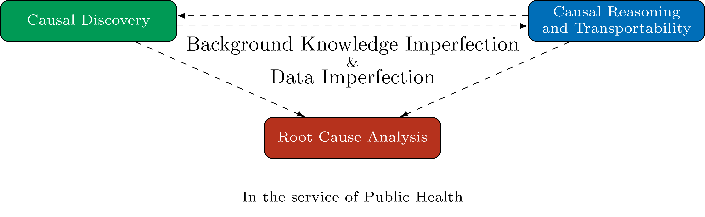

Research team · Established 2024

CIPHOD
Causal inference for public health using observational datasets
Sorbonne Public Health Institute · UMR-S 1136
Inserm · Sorbonne Université
About the team
Founded in 2024, CIPHOD is a research team within the Sorbonne Public Health Institute. The general objective of the CIPHOD team is to develop novel theoretical results and innovative methodologies in causal inference, with a focus on their applicability and usefulness for epidemiologists. The team’s research is structured around three main axes: discovering causal graphs, identifying and estimating causal effects, and searching for root causes of anomalies. Across these three axes, the team places particular emphasis on integrating high-level background knowledge, such as causal graph abstractions, and on developing methods that can account for cyclic causal structures.

Publications
Search and year filters are active. Use Paper for the publication page or PDF, BibTeX to expand the citation entry, and Abstract to expand the abstract panel on the page.
Members
Charles Assaad
Team leader
Efraín Flores
Biostatistician
Simon Ferreira
PhD Student
Marika Kosohorská
PhD Student
Timothée Loranchet
PhD Student
Denis Nash
Professor
Willow Scott
PhD Student
Past members
Anouk Ruer
Intern
Federico Baldo
Postdoc
Isabela Belciug
Intern
Séhane Bel
Houari-Durand
Intern
Sarah Semlali
Intern